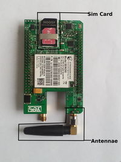
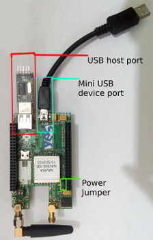
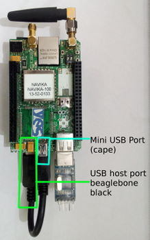
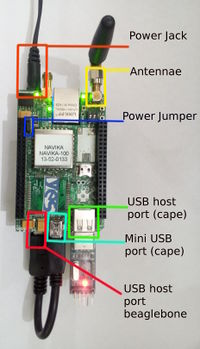
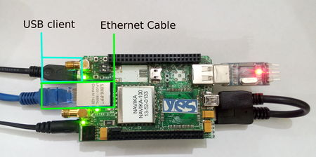

SW startup guide for Vayu 3G
For a quick guide to starting with the Vayu 3G cape's HW, see
Leaflet for 3G cape.
Below, we describe how to set up the 3G capes and the associated software.
Overview
Data connection is established based on PPP protocols. Wvdial is mainly used to configure the dialup settings. For setting up various settings for PPP connection and establishing a data connection on these capes follow the link to the wiki
- Way to setup the Vayu 2G Capes
- How to read location and coarse time as NMEA-0183 message from the serial UART ttyO4 port
- How to write wvdial conf files for any network
- Sample wvdial.conf file for AT&T and T-Mobile USA
For using the Vayu-3G-A/Vayu-3GP-A Cape, please ensure that you have the following :
1) USB drivers for the modem (21f5:2012) installed in kernel 2) PPS drivers enabled in kernel, required if GPS module is present. 3) VAYU Device tree overlay file is properly configured.
You can either download kernel patches containing the same to use with your existing images or you can download our prebuilt MicroSD card image or EMMC flasher image.
All the images and files and extra support on software can be found here: Vayu_Cape_SW_images_and_drivers
Note : On most beaglebones, there is a known bug with USB hotplug for using USB HUB with Beaglebone black host port. So to efficiently be able to use the modem, follow the Power on Modem section properly. An alternative easier approach is to keep the second host port on cape populated with a usb device.
Hardware Configurations
The 3G/WCDMA modem has following interfaces available on the Cape: Leaflet_3G modem
-
Mini USB B Device port on Cape (P9): It has to be connected to USB host port on Beaglebone Black.
-
SMA connector for GSM/WCDMA antenna(P7): Antenna is connected here.
-
LED D2 (5V Power LED of Cape) : This LED indicates that the Cape is powered on with 5V and GSM/WCDMA modem is also powered.
-
LED D4 (SIGNAL LED) : This LED is the SIGNAL LED for the GSM/WCDMA modem whose various blinking states denote the different states of the WCDMA Modem.
-
GPIO45 (ON/OFF PIN) : It is the GPIO connected to Power ON/OFF pin of GSM/WCDMA Modem.
-
GPIO60 (Hard Reset Pin) : It is the GPIO connected to Reset pin of GSM/WCDMA Modem.
-
S1 (ON/OFF switch) : This push button switch is connected to Power ON/OFF pin of GSM/WCDMA modem.
-
S2 (RESET switch) : This push button switch is connected to Hard Reset pin of GSM/WCDMA modem.
-
GPIO45 and GPIO60 should be set high at all instances for the GSM/WCDMA modem to be available for use.
-
USB drivers for the modem (21f5:2012, 21f5:2009) should be included in the kernel. We provide pre-compiled images with USB drivers included in the kernel.
Getting started
Seting up the system
-
Place a mini sim in the sim card slot and connect a GSM antenna to the SMA connector.
-
Mount the cape on BBB carefully.
-
Connect the extra usb cable provided with the cape between Host port on Beaglebone Black and miniUSB device port on Cape.
-
To avoid the bug on Beaglebone black with external USB hubs, please connect a USB device (pendrive etc) to extra host port on the cape.
-
Ensuring that the power jumper on the cape is in its place, power up the setup using a 5V DC adapter(min 2.5A) to barrel jack. D2 LED on the cape will glow alongwith LEDs on the Beaglebone black.
Note : Before proceeding further ensure D2 LED is glowing properly. Make sure that the adapter being used is of proper rating and has been connected properly. Further check for the presence of the power jumper(#12 on leaflet).
Note : Do not try to power up using USB cable alone. Always power up system with a DC adapter. Also while disconnecting power, USB cable should be removed before the DC adapter.

Hardware setup
  
After establishing that the power on the cape is proper, log in to the BBB plus cape setup using any of the following method :
-
Through USB client.
-
Through Ethernet cable.

Now login by using the SSH command. Make sure to login as root only so that all the special priviledges are available.
1) Through USB client. Use the command :
ssh -l root 192.168.7.2
to login onto the system. Default password is root.
2) Through ethernet cable.
The ip address of the ethernet cable should be known. Use that with the ssh command to esatblish a connection :
ssh -l root $address
Default Username and password is root.
In Yantrr Precompiled images, IP address is 192.168.1.150
After logging into the BBB plus cape system, export and set the GPIO45 and GPIO60 high by using:
cd /sys/class/gpio/
echo 45 > export
echo 60 > export
cd gpio45
echo “high” > direction
cd ..
cd gpio60
echo “high” > direction
NOTE : In precompiled image, for ease of use these regular commands for use with the GPIOs have been created as functions : pinexp, setout, setin, pinread.
pinexp 45
pinexp 60
setout 45 high
setout 60 high
Power On Modem
The Modem can be powered on by providing a low level pulse at ON/OFF Pin for 3-4s when the module is off. It can be achieved by either using the push button switch S1 or GPIO45.
cd /sys/class/gpio/
echo 45 > export
cd gpio45
echo "high" > direction
sleep 4
echo "low" > direction
sleep 4
echo "high" > direction
- After some time, LED D4 should start blinking as to indicate modem has turned on. (Note : In some of 3G modules LED functionality is not enabled by the manufacturer, so the LED D4 might not blink)
Note : In cases where a usb device was not connected to extra host port on cape, please connect the provided USB cable after turning on the modem.
Check that modem is visible on the USB bus by:
lsusb
Bus 001 Device 002: ID 0424:2412 Standard Microsystems Corp.
Bus 001 Device 001: ID 1d6b:0002 Linux Foundation 2.0 root hub
Bus 002 Device 001: ID 1d6b:0002 Linux Foundation 2.0 root hub
Bus 001 Device 034: ID 21f5:2012
Bus 001 Device 007: ID 046d:0825 Logitech, Inc. Webcam C270
Assigning driver on the USB modem (Not needed if using pre-built images)
modprobe usbserial vendor=0x21f5 product=0x2012
lsusb
Bus 001 Device 002: ID 0424:2412 Standard Microsystems Corp.
Bus 001 Device 001: ID 1d6b:0002 Linux Foundation 2.0 root hub
Bus 002 Device 001: ID 1d6b:0002 Linux Foundation 2.0 root hub
Bus 001 Device 034: ID 21f5:2012
Bus 001 Device 007: ID 046d:0825 Logitech, Inc. Webcam C270
-
System messages (logs) show what happened when modem was turned on and its drivers were assigned after applying modprobe usbserial. For pre-compiled image, log messages are similar.
dmesg | grep -i usb usb 1-1.1: New USB device found, idVendor=21f5, idProduct=2012 usb 1-1.1: New USB device strings: Mfr=3, Product=2, SerialNumber=4 usb 1-1.1: Product: StrongRising Technologies usb 1-1.1: Manufacturer: Modem usb 1-1.1: SerialNumber: 000000000002 usb 1-1.1: usb_probe_device usb 1-1.1: configuration #1 chosen from 1 choice usb 1-1.1: adding 1-1.1:1.0 (config #1, interface 0) usbserial_generic 1-1.1:1.0: usb_probe_interface usbserial_generic 1-1.1:1.0: usb_probe_interface - got id usbserial_generic 1-1.1:1.0: The "generic" usb-serial driver is only for testing and one-off prototypes. usbserial_generic 1-1.1:1.0: Tell linux-usb@vger.kernel.org to add your device to a proper driver. usbserial_generic 1-1.1:1.0: generic converter detected usb 1-1.1: generic converter now attached to ttyUSB0 usb 1-1.1: adding 1-1.1:1.1 (config #1, interface 1) usbserial_generic 1-1.1:1.1: usb_probe_interface usbserial_generic 1-1.1:1.1: usb_probe_interface - got id usbserial_generic 1-1.1:1.1: The "generic" usb-serial driver is only for testing and one-off prototypes. usbserial_generic 1-1.1:1.1: Tell linux-usb@vger.kernel.org to add your device to a proper driver. usbserial_generic 1-1.1:1.1: generic converter detected usb 1-1.1: g'''eneric converter now attached to ttyUSB1''' usb 1-1.1: adding 1-1.1:1.2 (config #1, interface 2) usbserial_generic 1-1.1:1.2: usb_probe_interface usbserial_generic 1-1.1:1.2: usb_probe_interface - got id usbserial_generic 1-1.1:1.2: The "generic" usb-serial driver is only for testing and one-off prototypes. usbserial_generic 1-1.1:1.2: Tell linux-usb@vger.kernel.org to add your device to a proper driver. usbserial_generic 1-1.1:1.2: generic converter detected usb 1-1.1: '''generic converter now attached to ttyUSB2''' -
It is recommended to add a proper driver for the modem in kernel. The generic driver is not reliable.
Note : If the modem is not visible after these steps or any issues are faced while initializing the modem please contact Yantrr Support (support@yantrr.com) with the above log messages (dmesg | grep –I usb or /var/log/syslog).
Understanding the TTYUSB ports on BBB capes
Vayu 3G cape enumerate 3 different usb ports
/dev/ttyUSB0 /dev/ttyUSB1 /dev/ttyUSB2
- ttyUSB0 is data port & command for modem, use this for the WVDIAL conf or PPP
- ttyUSB1 is the diag port for the Firmware upgrade
- ttyUSB2 is the AT CMD port only.
Note : These ttyUSB ports are only created if proper drivers are present or when “modprobe usbserial” command is issued. Pre compiled images with drivers are available on the Yantrr wiki page.
Note : Both ttyUSB0 and ttyUSB2 take the AT commands, but ttyUSB0 port is also a Data communications port so for all intended purposes of issuing AT commands use ttyUSB2 port(PCUI port).
Power Off Modem
The modem can be powered off by providing a low level pulse at ON/OFF pin for 3-4s when the module is On. It can be achieved by either using the
push button switch S1 or GPIO45.
cd /sys/class/gpio/
echo 45 > export
cd gpio45
echo "high" > direction
sleep 4
echo "low" > direction
sleep 4
echo "high" > direction
Modem can also be turned off by issuing following AT commands on port /dev/ttyUSB2
AT+ZPWROFF
Soft Resetting the Modem
Steps -
1.Power Off the Modem.
2.Wait for 1-2s atleast.
3.Power on the modem.
Hard resetting the modem
There might arise situations where modem does not seem to be responding to any commands issued on AT commands port or it cannot be turned on/off. In such scenarios, issue hard reset to the modem. It can be done by either toggling Switch S2 for atleast 100ms or pulling GPIO60 low for 1s and then setting it high again.
cd /sys/class/gpio/
cd gpio60
echo "low" > direction
sleep 1
echo "high" > direction
Note : Please use hard reset conservatively. Soft reset should be preferred under most conditions.
VAYU 3GHx-D(ZTE Modem)
VAYU 3GHx-D capes have ZTE MG3732 modem. Their functionality is essentially the same with some minor changes. For more information on ZTE MG3732 modem and a quick reference guide click here
AT Commands Manual
The AT Command for the 3G Module can be downloaded from here :
WCDMA AT Commands Manual
FAQ
Ques) LED D2 on the cape is not glowing after powering up the Beaglebone black plus cape setup?
Ans)
1) Ensure setup was powered up initially using a DC adapter (5V, 2.5A min) only.
2) Ensure the power jumper (#12 on leaflet) is present.
Ques) Can the BBB plus Cape setup be powered up using USB cable too?
Ans) USB cable alone cannot provide sufficient power(only500mA max) to drive the Beaglebone Black and Cape together, so it is possible that BBB will not boot properly and the Modem may not even power up.
Use a DC power adapter of 2.5A,5V rating at barrel jack to properly boot Beaglebone black with our cape.
Connect USB cable for SSH login purposes only.
Ques) Modem is not visible in the list of devices after issuing “lsusb” command on the Debian wheezy shell?
Ans) Beaglebone Black USB host port has a bug when used with external USB hubs.
1) After powering up the BBB plus cape setup, ensure modem was turned on by either using the switch S1 or controlling GPIO 45.
2) Then a USB cable has to be connected between USB host port on BBB and mini-USB device port on the cape. Now issuing a “lsusb” command should show Modem (21f5:2012) among list of devices.
3) Also ensure that GPIO45 and GPIO60 are set high in output mode after BBB boots up.
Note : If you face issues detecting Modem after following above steps, then alternately connect USB cable between BBB and Cape before power up and attach a USB device(pendrive etc) to the extra USB host port available on the cape. Then, Power up the BBB plus cape setup and after proper bootup, turn on the Modem.
Ques) Modem is visible in list of devices shown by “lsusb” but no “ttyUSB” ports are created?
Ans)
1) Make sure you are logged in as root.
2)Ensure the Debian Wheezy or the OS used has drivers installed for the modem. Pre-compiled Images with drivers included are available on Yantrr Wiki page.
3) Alternately, issue the following command to initialize drivers for the Modem ports.
sudo modprobe usbserial vendor=0x21f5 product=0x2012
Note : This will create generic ports for the Modem, but it is advised to include drivers in the kernel.
Ques) How to issue AT commands to the modem?
Ans) Both ttyUSB0 and ttyUSB2 take the AT commands, but ttyUSB0 port is also a Data communications port so for all intended purposes of issuing AT commands use ttyUSB2 port(PCUI port).
Ques) What are some common useful AT commands to ensure 3G modem is working?
Ans) Some common AT commnds :
1) AT = Output “OK” if modem is on.
2) AT+CPIN? = Outputs the status whether sim card is detected or not.
3) AT+CREG? = To check if sim card is registered or not.
4) AT+COPS? = Operator selection.
5) AT+CSQ = Outputs Signal strength.
Ques) What is the function of each LED? What do they denote and how do they function under different conditions?
Ans) D2 is power Led of Cape, which denotes the 5V power being provided to Cape and for the Modem.
D7 is 3.3V power LED from the Beaglebone Black. This denotes 3.3V power for GPS module and other ICs on Cape.
D5 is 1 PPS Fix led for the GPS module. It will blink at the rate of 1Hz, when GPS module has got its fix.
D4 is Netlight/Signal Led for the 2G/3G Modem. It has different behaviours depending on the state of Modem. For 3G modems, it is an optional feature. Ask for this feature while ordering.
D3 is Status LED for the GPRS Modem. It gives the indication whether the GPRS Modem is on or not. It glows continuously when the Modem is Turned ON and stays off when the Modem is turned OFF.
Ques) What are the functions of the different Switches?
Ans) S1 is ON/OFF push button switch for the Modem.
S2 is Hard Reset push Button switch for the Modem.
S3 is Reset push button switch for the GPS module.
S4 is 2 position DIP switch for specifying address for the EEPROM IC of cape on I2C2 bus of Beaglebone Black.